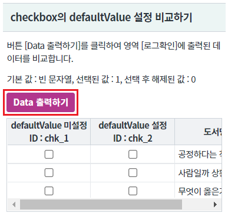
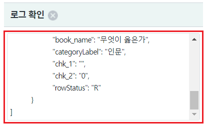
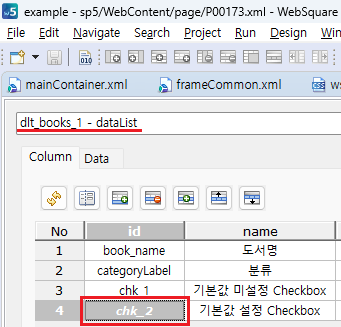
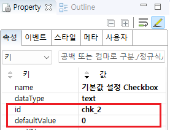
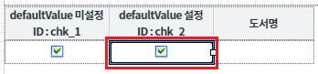
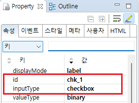

GridView의 속성 InputType을 checkbox로 구성하고 기본 값을 설정하는 예제입니다. 이 기능은 GridView와 연결된 DataList의 컬럼 속성 defaultValue를 지정하여 구현합니다.
속성 defaultValue는 컬럼의 데이터가 없는 경우 기본 값을 할당하기 위해 사용합니다. (서버에서 데이터가 해당 컬럼이 없이 내려오거나 컬럼의 값이 빈 문자로 할당 된 경우) defaultValue를 지정하지 않는 경우 컬럼의 기본 값은 빈 문자입니다.
checkbox의 defaultValue 설정 비교하기
GridView와 연결된 DataList에 할당한 JSON에는 checkbox와 연결된 컬럼이 정의되지 않았습니다. devaultValue를 설정한 컬럼과 설정하지 않은 컬럼의 데이터를 비교합니다.
[브라우저(Chrome) 실행 예시]

checkbox와 연결된 chk_1과 chk_2의 값이 아래와 같이 할당됩니다.
- "chk_1": "" //deafultValue 미설정
- "chk_2": "0" //deafultValue 설정 - 설정값:0
[브라우저(Chrome) 실행 예시]

[로그 예시]
//로그 예시 //chk_1 : deafultValue 미설정 //chk_2 : deafultValue 설정 [ { "book_name": "공정하다는 착각", "categoryLabel": "인문", "chk_1": "", "chk_2": "0", "rowStatus": "R" }, { "book_name": "사람일까 상황일까", "categoryLabel": "인문", "chk_1": "", "chk_2": "0", "rowStatus": "R" }, { "book_name": "무엇이 옳은가", "categoryLabel": "인문", "chk_1": "", "chk_2": "0", "rowStatus": "R" } ]
GridView와 연결될 DataList의 컬럼 속성 defaultValue에 값을 지정하고 GridView의 컬럼의 inputType을 checkbox로 설정합니다.
GridView와 연결된 DataList 생성 및 연결 방법은 생략되었습니다.
스튜디오의 DataCollection 탭에서 GridView와 연결할 DataList를 선택합니다.
기본 값을 지정할 컬럼을 선택하고 속성을 지정합니다.
[필수] defaultValue="기본 값" //할당된 값이 없는 경우 설정할 기본 값
예시) defaultValue="0"
[필수] id="컬럼 ID"
예시) id="chk_2"
그림 1.웹스퀘어5 SP5 스튜디오의 DataCollection 탭 예시 - 컬럼 선택

그림 2.웹스퀘어5 SP5 스튜디오의 Property View(속성창) 예시

[소스 코드 예시]
<!-- DataList 본문 예시 --> <w2:dataList baseNode="list" id="dlt_books_1" repeatNode="map" style="" valueAttribute=""> <w2:columnInfo> <!-- 중략 --> <w2:column id="chk_2" defaultValue="0" name="기본값 설정 Checkbox" dataType="text"></w2:column> </w2:columnInfo> </w2:dataList>
STEP2. GridView의 checkbox 컬럼을 구성하고 속성을 정의합니다.
[필수] inputType="checkbox" //컬럼의 유형 - checkbox
[필수] id="chk_2" //DataList의 컬럼 ID - defaultValue가 설정된 컬럼
그림 3.웹스퀘어5 SP5 스튜디오의 Design 탭 예시 - 컬럼 선택

그림 4.웹스퀘어5 SP5 스튜디오의 Property View(속성창) 예시

[소스 코드 예시]
<!-- gridView 의 소스 본문 예시 --> <w2:gridView dataList="data:dlt_books_1" id="grd_exam1" style="height:100px;"> <!-- 중략 --> <w2:gBody id="gBody1" style=""> <w2:row id="row2" style=""> <!-- 중략 --> <w2:column id="chk_2" inputType="checkbox"></w2:column> <!-- 중략 --> </w2:row> </w2:gBody> </w2:gridView>
[DataList] [column] defaultValue
[GridView] [body column] inputType
[GridView] [body column] valueType
[웹스퀘어5 SP5 개발 가이드] GridView
링크 : https://docs1.inswave.com/sp5_user_guide/bc10c1b82c9a2a0b#e1c4658baf7e726f
[웹스퀘어5 SP5 개발 가이드] GridView inputType="checkbox"
링크 : https://docs1.inswave.com/sp5_user_guide/86bdcf48029b958b#3e94eba8977de29e